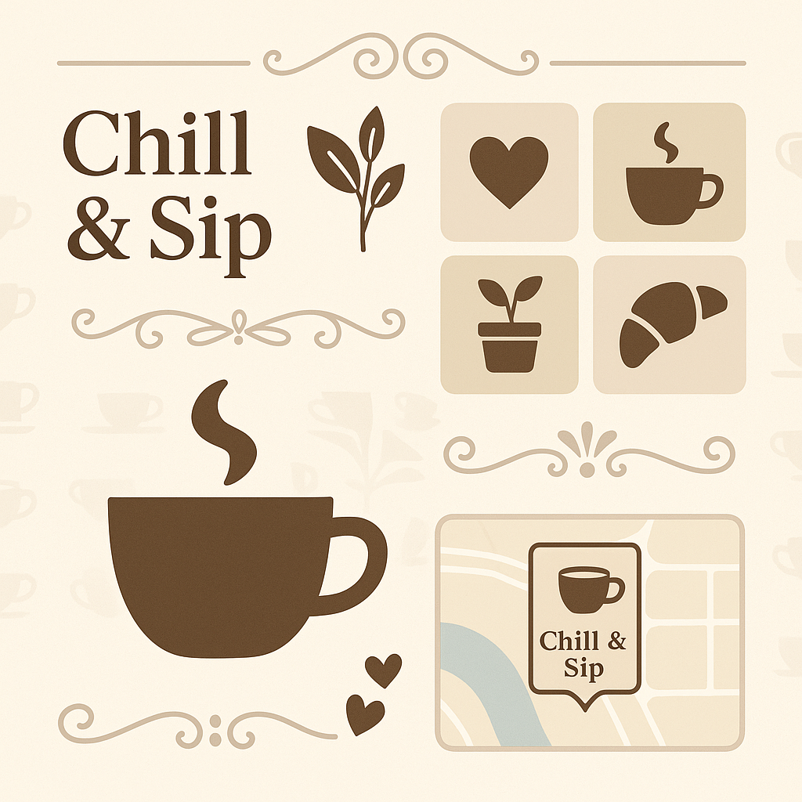
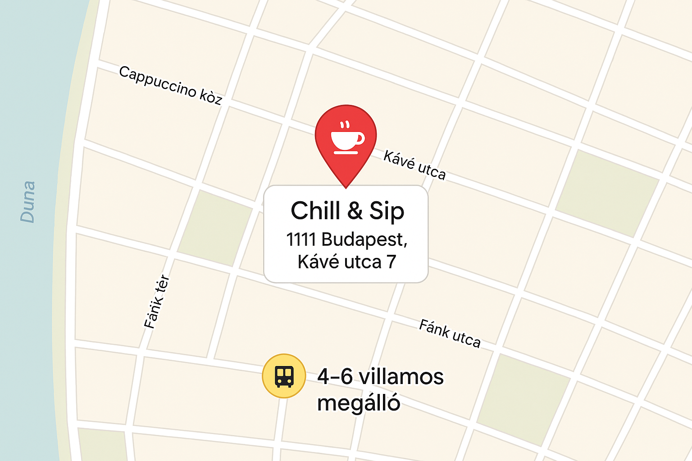

Kapcsolat
Kérdésed van a kávéinkkal, asztalfoglalással vagy eseményekkel kapcsolatban? Itt találsz meg minket, online és offline is.

Elérhetőségek
- Cím: 1111 Budapest, Kávé utca 7.
- Telefon: +36 30 123 4567
- E-mail: hello@chillandsip.hu
Nyitvatartás
- Hétfő - Péntek: 8:00 - 20:00
- Szombat: 9:00 - 21:00
- Vasárnap: 9:00 - 18:00
Megközelítés
Kávézónk a belvároshoz közel található, tömegközlekedéssel és autóval is könnyen elérhető.
- Villamos: 4-6, „Kávé tér” megálló
- Busz: 7-es, 112-es
- Parkolás: utcai, fizetős parkolóövezet
Kövess minket
Nézz be a közösségi oldalainkra is, ahol újdonságokat, szezonális italokat és akciókat osztunk meg.
- Instagram: @chillandsip
- Facebook: Chill & Sip Kávézó
- TikTok: @chillandsipcoffee
Hol találsz meg minket?
Íme egy kis ízelítő a környékről, gyere, nézz be hozzánk egy kávéra!
